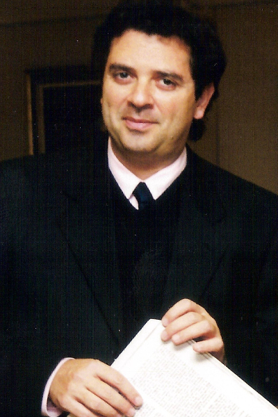

Dario Ntaca (Argentina)
Nacido en Buenos Aires, Darío A. Ntaca surge como uno de los músicos más destacados de su generación. Sus logros como pianista y director le otorgan un relieve muy excepcional entre los artistas de las Américas. Se ha presentado en distintas oportunidades junto a Martha Argerich, tanto como pianista como director.
Ha dado numerosas giras junto la Orquesta de San Luis, de la que fuera Director Titular entre 1990 y 1996, entre las que cabe destacar la que realizaran en 1992 por diversos centros de los Estados Unidos. En 1994 se editó un disco compacto de la Orquesta de San Luis grabado en Estados Unidos donde dirige desde el piano el Concierto en Fa K. 459 de Mozart. Este registro también incluye la 7a Sinfonía de Beethoven.
Darío Ntaca se ha presentado como pianista y director con la Orquesta Sinfonietta de París, Filarmónica de Moravia (República Checa); en Bulgaria con la Sinfónica de Burgás y Filarmónicas de Varna, Russe y Plovdiv y Sinfonietta Sofia, siendo invitado frecuentemente a dirigir en Venezuela, Colombia y Guatemala. También en 1994 realizó una gira por España con la Orquesta de Cámara de Oxford.
Su repertorio pianístico incluye las obras completas de Rachmaninoff para piano y orquesta y se ha presentado con ellas en varios centros de América como Los Ángeles, Bogotá, Medellín, Buenos Aires, Santiago, Campinas (Sao Paulo), etc. Su interpretación de Rachmaninoff ha sido reconocida unánimemente por la crítica y artistas distinguidos como Martha Argerich, Earl Wild y Alexis Weissenberg.
Se presenta también frecuentemente con los dos conciertos de Brahms, entre las Orquestas que lo han invitado a tocar ambos conciertos figura la Sinfónica Nacional de Argentina. También dirige desde el piano la mayoría de los conciertos de Mozart.
Ha ofrecido recitales de piano en diversos centros del mundo entre los que se destacan París, Bucarest, Belgrado, Los Angeles, Tokyo, New York y Buenos Aires. Su presentación en Carnegie Recital Hall fue muy elogiada por el New York Times.
Estudió con su padre, Alejandro Ntaca, quien fuera uno de los pedagogos del piano más reconocidos de las Américas. También estudió Dirección Orquestal en la Juilliard School con Vincent La Selva y se graduó de la State University of New York donde estudió con Germán Diez. Recibió el “1983 Concert Award” por su ejecución del 3er Concierto de Rachmaninoff en la State University of New York y en 1985 le fue otorgada la medalla de plata en el Concurso Internacional de Colorado también por su versión del 3er Concierto de Rachmaninoff.
Recientemente se ha editado en DVD un registro realizado por la Sinfonietta Argerich bajo la dirección del Maestro Darío Ntaca. Éste contiene el Concierto en Sol menor de Bach, con el propio Maestro dirigiendo desde el piano y el Segundo Concierto de Beethoven con Martha Argerich como solista.